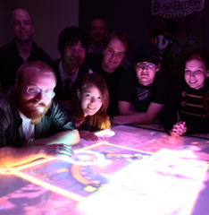

I was recruited by the social games giant Zynga in my final quarters at SCAD. Zynga has given me the opportuntiy to work on a variety of titles at a variety of stages in their lifecycle. I've learned an incredible amout about designing, developing and maintaining commerical games.
In 2012 I spent 8 months working with a large team on an unreleased iOS title. I developed the majority of the game's systems balance, building out a complex statistical model to aid in tuning the game's content.
When I came onto the project the team was in the midsts of a large core mechanics pivot. I helped the team redesign the core game mechanics as well as worked closely with our developers and product managers to guide the development of new features and build our content pipeline.
I was a particularly integral player in the implementation and use of a content pipeline for linking collision meshes to objects in our game and building game levels with that content.
I worked closely with the rest of the product team to develop the game's first time user experience. These early game steps are a critical part of many casual games. Teaching players the mechanics of the game and giving players their first tastes of gameplay. Within the FTUE and throughout the game's mechanical pivots I worked to help make sure that new features were surfaced properly to players and integrated well with the rest of the game's core design.
On Cityville: Hometown and Forestville I helped to manage the games' week to week content caedences and worked with the design team to build out post launch features. For each week I wrote quests, designed and balanced our new content, implemented that content in the game, and worked with QA and our produceres to launch our new content on a tight schedule.
Additionally I worked on a varienty of new features for our games' periodic client releases. Writing specs, wireframing flows, and working with artists ,developers, and QA throughout the feature development process. I was responsible for pulling, analyzing, and presenting on the performance metrics for all my features and content post launch.
Near the end of my time in the Hometown studio I helped transfer control of the products to and international team that would continue to maintain them while the core team moved on to new projects.
On Cityville: HolidayTown, myself and a small team executed on a group-up reskin of the Cityville: Hometown engine, creating a new Holiday themed game. The entire project was completed in a very short time. I filled a integral role, designing and writing quest content, desinging and implementing our game content, designing new game features, and handling the game's systems balance.
In my senior year I began experimenting with Natural User Interface (NUI) based work. I was intrigued by the concept of large, shared, group experiences with digital technology. I eventually spearheaded the design and construction of an interactive table based on infra-red tracking of objects placed on the table. With the enthusiastic help and resources of SCAD, myself and a team were sent to Hong Kong for three weeks to build what would become the IndieCade 2011 finalist game Black Bottom Parade.
At SCAD I discovered a love for game systems. The rules that define games allow us to explore whole new worlds and think in new ways. Redefining the constraits within which we experience the world is the essence of games. I found a particular affinity with the shared experiences of these worlds players can experience in multiplayer and social gaming. Whether around a board, on a computer, or in a physical space.
